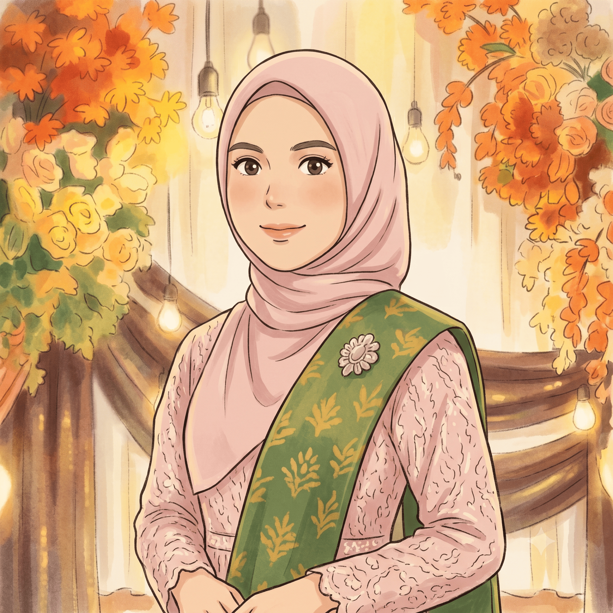
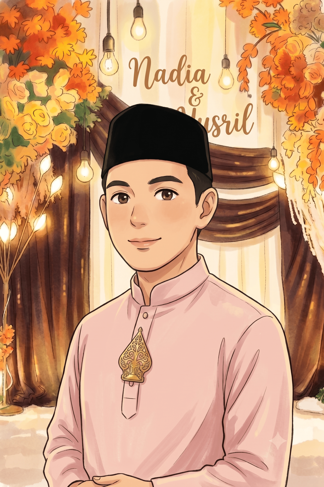
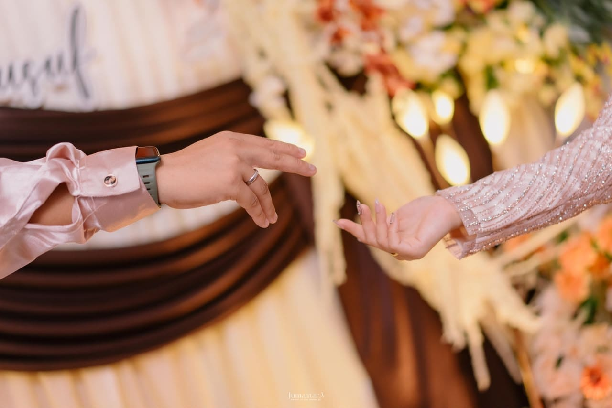
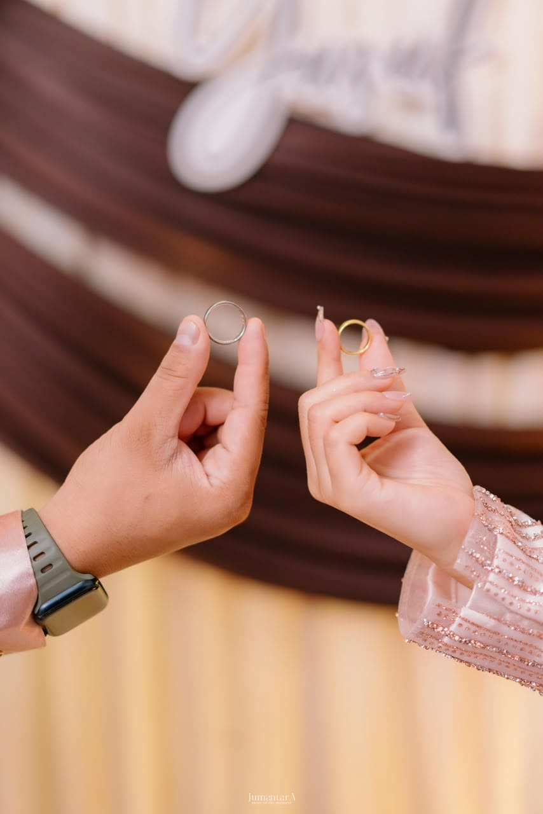

Nadia Aprilia, M.Pd
Putri dari
Bapak H. Edi Yuparnis, S.Ag
& Ibu Hj. Ernariza, S.Ag
Dear :
Tamu Undangan
Please be a part of our happiest moment.
The wedding of
Nadia & Yoesuf
05 · 09 · 2026
وَمِنْ آيَاتِهِ أَنْ خَلَقَ لَكُمْ مِنْ أَنْفُسِكُمْ أَزْوَاجًا لِتَسْكُنُوا إِلَيْهَا وَجَعَلَ بَيْنَكُمْ مَوَدَّةً وَرَحْمَةً ۚ إِنَّ فِي ذَٰلِكَ لَآيَاتٍ لِقَوْمٍ يَتَفَكَّرُونَ
Dan di antara tanda-tanda kebesaran-Nya, diciptakan-Nya untukmu pasangan dari jenismu sendiri agar hatimu merasa tenteram bersamanya, serta ditumbuhkan-Nya rasa kasih dan sayang di antara kalian. Sesungguhnya pada yang demikian itu benar-benar terdapat tanda kebesaran Allah bagi orang-orang yang mau berpikir.
QS. Ar-Rum (30) : 21
Assalamu'alaikum Warahmatullahi Wabarakatuh
Maha Suci Allah yang telah menciptakan makhluk-Nya berpasang-pasangan. Ya Allah semoga ridho-Mu tercurah mengiringi pernikahan kami.

Putri dari
Bapak H. Edi Yuparnis, S.Ag
& Ibu Hj. Ernariza, S.Ag

Putra dari
Bapak Suhedi Efrizon
& Ibu Anita
Menghitung Hari
Waktu & Tempat
Jumat, 4 September 2026
20.00 WIB – Selesai
Jl. Bata Ujung, Simp. BPG
Kota Pekanbaru
Sabtu, 5 September 2026
11.00 WIB – Selesai
Jl. Bata Ujung, Simp. BPG
Kota Pekanbaru
Galeri
Genggaman tangan ini adalah awal dari perjalanan panjang kami berdua


Kisah Kami
Atas izin Allah SWT, perjalanan ini bermula dari perkenalan sederhana melalui kebaikan seorang teman. Tiada yang kebetulan dalam takdir-Nya. Dari sapaan sederhana, perlahan tumbuh rasa nyaman, tawa yang senada, dan obrolan panjang tentang masa depan yang tak pernah disangka akan bermuara sejauh ini.
Seiring berjalannya waktu, Allah mantapkan niat dan keyakinan di antara kami. Di awal tahun, kami mengambil langkah baru yang lebih serius. Mengikat janji di hadapan keluarga tercinta, menegaskan niat untuk saling menggenggam dan berjalan beriringan.
Muara dari setiap doa pun akhirnya berlabuh. Di hari yang penuh keberkahan, disaksikan keluarga dan orang-orang tersayang, kami mengikrarkan janji suci pernikahan. Memulai ibadah terpanjang, siap mengarungi bahtera rumah tangga yang sakinah, mawaddah, warahmah hingga ke surga-Nya.
Tanda Kasih
Kehadiran serta doa restu Bapak/Ibu/Saudara/i adalah hadiah yang paling berarti bagi kami. Namun jika ingin memberi tanda kasih secara digital, dapat melalui rekening berikut.
Bank Syariah Indonesia (BSI)
7152 8503 06
a.n. NADIA APRILIA
Bank Riau Kepri (BRK)
1044 3051 44
a.n. NADIA APRILIA
Konfirmasi Kehadiran
Doa & Ucapan
Jadilah yang pertama mengirim doa & ucapan.